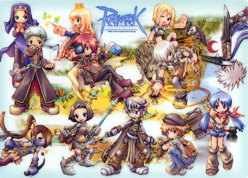
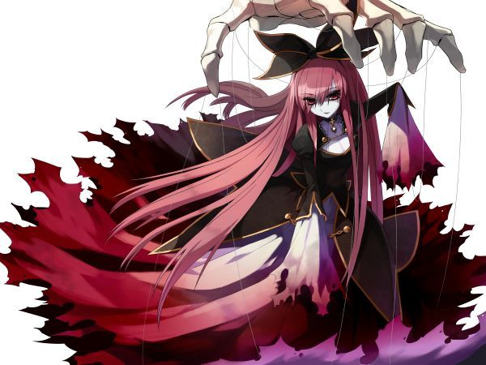
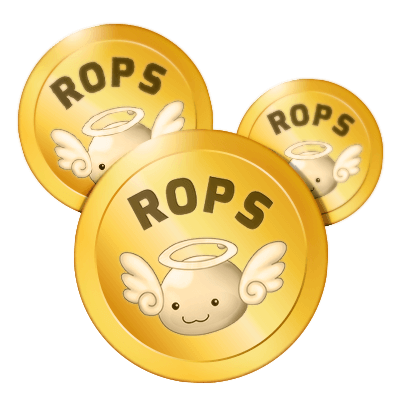

MVPs
MVP (do inglês Most Valuable Player, "Jogador Mais Valioso") é o nome designado aos personagens premiados por derrotarem os monstros mais poderosos de Ragnarök Online! O termo é mais usado para indicar um monstro MVP, visto que são diferentes e mais raros que os monstros comuns.

Instâncias
Instâncias são calabouços exclusivos para seu grupo, sem interferência de outros personagens. Também conhecida como Calabouço Memorial, esse tipo de modalidade segue uma história com diversas missões para seu grupo cumprir, o objetivo é terminá-las antes do tempo acabar.
Mapas de Up
O mundo dos humanos, como Midgard é conhecida, localiza-se no centro do tronco da árvore Yggdrasil, sendo um dos nove mundos existentes na mitologia nórdica. É em Midgard onde você começa suas aventuras em Ragnarök Online.
